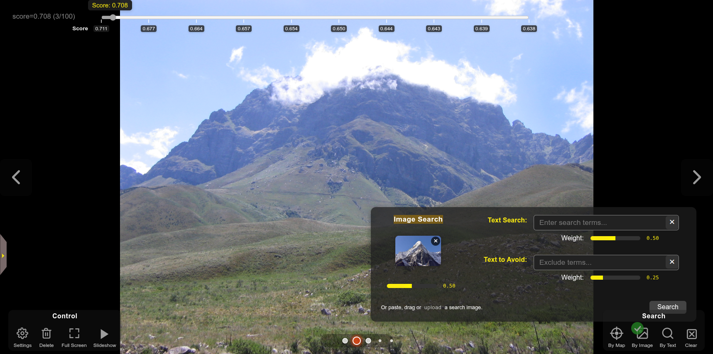
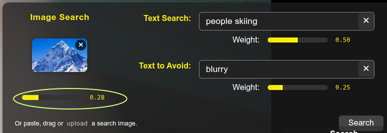
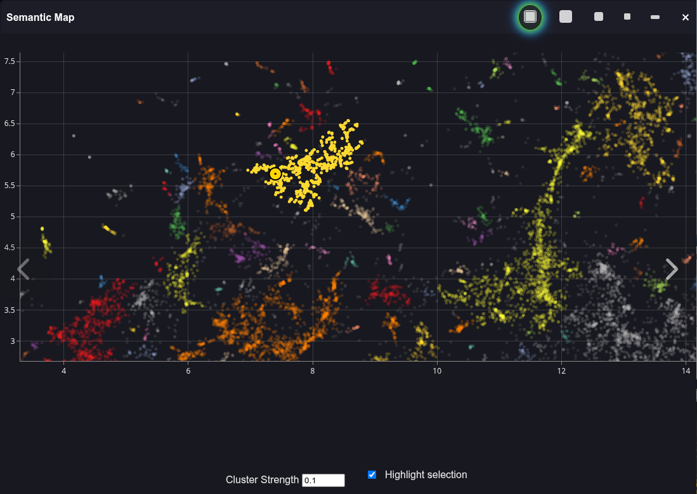

Search
PhotoMapAI provides several types of AI-enabled search across your image/photo collection:

- Search by Image - Provide an image and PhotoMapAI will find matches against it.
- Search by Text - Type in a word or phrase and PhotoMapAI will find the closest matches.
- Search by Text and Image - Provide image and text to find matches that best combine the two. You can also provide a "negative search text" to disfavor certain image content.
- Search by Map - Browse images that are clustered together in the semantic map.
Search by Image
To search PhotoMapAI by image similarity:
-
Find images similar to the one currently on display in the main window.
When the image you wish to search on is displayed in the main window, click on the Landscape icon (labeled By Image in the screenshot above). The search results, sorted in descending order of relevance, will immediately be displayed in the main window. Since you are searching on an image that is already in the album, the top hit will be the one you searched with. Navigate forward using the > button or the right arrow key to see the next best result.
-
Drag an image into the Search area.
Drag an image from your local filesystem, a web page, or any other draggable source into the area where the three search buttons are located. The provided image will be used to search for other images that are similar.
-
Upload an image from your local filesystem
Click on the Magnifying Glass icon to open up the combined image/text search dialogue. Click the Image Search box (see screenshot below) to open up a file picker dialogue.
-
Paste an image from the clipboard
If you have an image in the clipboard, you may open the search dialogue and paste in the image in using the key combination appropriate for your platform (e.g. command-V).
The screenshot below shows the results of an image search on a photo of a generic mountain found in Google Images. The match score, a value ranging from 0.0 (no match) to 1.0 (perfect match), appears at the top left. The seek slider at the top lets you select images with particular score ranges. A bit counterintuitively, images with the strongest matches (highest scores) appear earlier to the left, and those with the weakest scores appear later.

Search by Text
Open the search By Text magnifying glass icon and type your search term into the input field labeled "Text Search." A wide variety of search terms are accepted. You can search for people ("blonde man in wool sweater"), subjects ("birthday party"), styles ("graphic novel"), or photography-related descriptors ("out of focus", "motion blur"). You can search for certain celebrities by name, but you cannot search for family members, friends and other private individuals. (Providing a way to train PhotoMapAI with custom data is a potential future improvement.)
Search by a Combination of Text and Image
An advanced use of the search interface allows you to search simultaneously on images and text. You can also provide "negative text" to avoid the appearance of certain themes or subjects. Be aware that it may take some trial and error to get the search to perform in the way you desire. One issue is that images typically match with a higher similarity score than text. Another issue is that negative text can often lower the overall match score and lead to no hits. To get more control over the process, each of the three search fields is accompanied by a weight slider (see circled area in the screenshot below) that allows you to adjust the relative weighting of each of the three criteria. The relative values of the three sliders controls how much each criterion will contribute to the search. I typically set the image and negative text fields to have weights that are less than half the weight of the positive text search and then adjust until I get the spread of search results I expect.

Search by Map
Clicking on the ⊙ (target) icon will open the Semantic Map and position a yellow marker on the dot that corresponds to the current image in view:

If you hover over dots adjacent to the current one, PhotoMapAI will pop up a thumbnail image to show you the neighbors of the current image. Clicking on a colored cluster will select all members of the cluster, dim other clusters, and set the selected cluster's members as the current search results. To turn off the cluster highlighting and restore full brightness to all clusters, uncheck the Highlight selection checkbox in the bottom right-hand corner.
Clearing the Search
When a search is active, a green checkmark on top of one or more search icons indicates the search type, and a clear search X Icon appears in the row of search icons. Click this box to clear the search results and reset PhotoMapAI to album browsing mode. Alternatively you can individually clear the similarity search image, and the positive and negative text search fields, by clicking on the X marks in their respective fields of the combined image and text search dialogue.